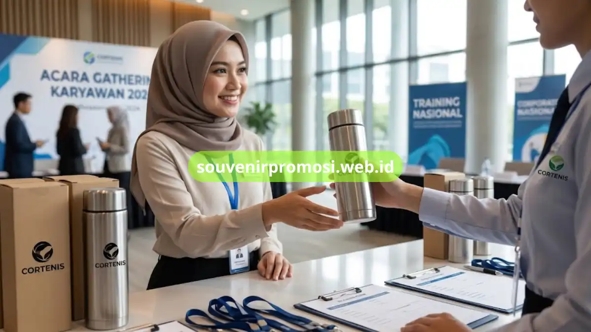

Tumbler custom cetak logo untuk souvenir perusahaan adalah tumbler bercetak identitas brand yang dibagikan sebagai merchandise harian karyawan maupun peserta acara. Tersedia berbagai model, kapasitas, dan pilihan tutup. Souvenir Promosi menyediakan tumbler custom siap cetak melalui souvenirpromosi.web.id.
Sebagai barang yang digunakan berulang setiap hari, tumbler custom memberikan eksposur logo yang konsisten, baik di lingkungan kantor, saat perjalanan, maupun aktivitas sehari-hari penerimanya.
Poin Penting
- Tumbler custom tersedia dalam model tutup ulir dan tutup sedotan.
- Cetak logo dapat menggunakan teknik digital printing full color.
- Kapasitas umum berkisar antara 400 ml hingga 600 ml.
- Cocok sebagai souvenir gathering, training, dan hadiah karyawan.
- Pemesanan dapat dilakukan langsung melalui website Souvenir Promosi.
Daftar Isi
Model Tumbler Custom yang Tersedia
Tumbler custom hadir dalam beberapa model sesuai kebutuhan fungsional dan tampilan yang diinginkan perusahaan. Model tutup ulir standar cocok untuk penggunaan formal sehari-hari, sementara model tutup dengan sedotan lebih praktis digunakan saat beraktivitas di luar ruangan.
Selain itu, tersedia pula model tumbler dengan lapisan luar berbahan silikon atau karet yang memberikan kesan modern serta melindungi permukaan dari benturan ringan. Pemilihan model dapat disesuaikan dengan target penerima souvenir, baik untuk karyawan internal maupun klien eksternal.
Material Tumbler Custom
Material yang umum digunakan pada tumbler custom meliputi stainless steel double wall dan plastik tritan bebas BPA. Material stainless steel menghadirkan kesan lebih premium, sementara tritan menawarkan tampilan transparan yang ringan dan ekonomis.
Pemilihan material turut mempengaruhi harga dan daya tahan produk, sehingga penting disesuaikan dengan anggaran serta tujuan penggunaan souvenir.

Proses Cetak Logo Full Color pada Tumbler
Cetak logo pada tumbler custom umumnya menggunakan teknik digital printing full color yang mampu menghasilkan gradasi warna sesuai identitas visual brand perusahaan. Teknik ini cocok digunakan untuk logo dengan desain kompleks maupun kombinasi warna yang beragam.
Selain digital printing, tersedia pula opsi sablon untuk desain logo dengan warna terbatas namun tetap menghasilkan cetakan yang rapi dan tahan lama. Tim desain Souvenir Promosi akan membantu menyesuaikan hasil akhir cetakan agar sesuai dengan panduan brand perusahaan Anda.
Pilihan Kapasitas dan Warna Tumbler Custom
Kapasitas tumbler custom yang umum dipesan berkisar antara 400 ml hingga 600 ml, disesuaikan dengan kebutuhan konsumsi harian penerima souvenir. Pilihan warna tersedia cukup beragam, mulai dari warna solid netral hingga kombinasi warna sesuai identitas brand.
Kombinasi kapasitas dan warna yang tepat akan membuat tumbler custom lebih menarik digunakan sehari-hari, sehingga eksposur logo perusahaan pun berlangsung lebih lama.
Cara Memesan Tumbler Custom di Souvenir Promosi
Pemesanan tumbler custom dapat dilakukan melalui website souvenirpromosi.web.id dengan menghubungi tim untuk konsultasi model, kapasitas, dan teknik cetak yang diinginkan. Tim Souvenir Promosi turut membantu proses desain agar hasil akhir sesuai dengan kebutuhan branding perusahaan.
Segera ajukan pemesanan tumbler custom sekarang melalui souvenirpromosi.web.id agar souvenir siap digunakan tepat waktu untuk kebutuhan acara perusahaan Anda.
Tumbler custom cetak logo merupakan pilihan souvenir perusahaan yang fungsional dan efektif memperkuat branding dalam aktivitas sehari-hari penerimanya. Dengan pilihan model, material, hingga teknik cetak yang beragam, perusahaan dapat menyesuaikan souvenir dengan kebutuhan acara dan anggaran yang tersedia.
Souvenir Promosi siap membantu mewujudkan souvenir tumbler custom berkualitas melalui proses pemesanan yang mudah dan cepat. Kunjungi katalog lengkap di souvenirpromosi.web.id dan pesan sekarang untuk kebutuhan souvenir perusahaan Anda.